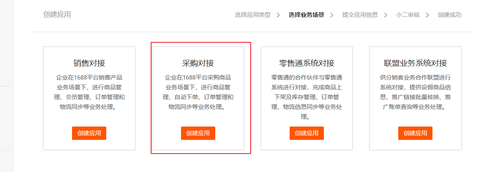
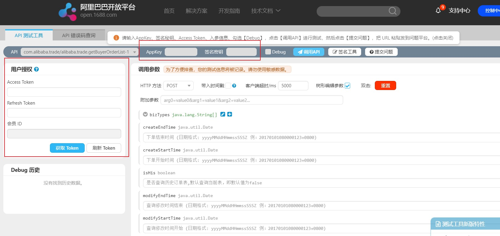

概述
什么是1688开放平台（ https://open.1688.com ）？
依托B2B海量用户资源以及强大的平台优势，是为阿里巴巴商家提供基础服务的重要开放途径，帮助商家提升经营能力、拓宽生意渠道、提高办公效率。从今年开始，阿里巴巴开放平台将向合作伙伴和广大第三方开发者逐步开放会员、公司库、类目、产品、交易、咨讯等一系列接口。为合作伙伴提供快捷的提交通路，多入口最优展现的同时，共享商机，互利双赢。
对接过程
以下演示是以对接1688采购订单为例。
1 注册开发者
如果想使用1688开放平台，必须首先要注册成为开发者，需要同时具备以下两个条件：
- 具备一个阿里巴巴中国站帐号；
- 必须绑定了通过个人实名（公司企业）认证的支付宝帐号；个人开发者必须绑定通过个人实名认证的支付宝账号，企业开发者必须绑定通过商家认证的支付宝账号；
开发者身份绑定的支付宝账户用于产品分成结算的收款账户。因此为了确认您的身份和安全考虑，必须通过支付宝认证。
2 获取证书
一、什么是应用证书：
证书指的是开发者在阿里巴巴开放平台创建应用是默认给开发者的应用开发证书。想要调用1688开放平台上的API必须申请证书。证书包含四个内容：
证书编号：App Key
证书密钥：App Secret
接口权限：开发者可以调用的API权限，包含基础开放与增值包
证书流量：应用可以调用API的流量限制
也就是“权限+流量+appkey+app secret=证书”，每个应用都有对应的应用开发证书，在应用创建时开发者获得证书。
二、什么是App Key？
App Key是应用的唯一标识，阿里巴巴开放平台通过App Key来鉴别应用的身份。
三、什么是App Secret？
AppSecret是阿里巴巴开放平台给应用分配的密钥，开发者需要妥善保存这个密钥，这个密钥用来保证应用来源的可靠性，防止被伪造。
获取证书过程
1.创建应用：根据自己公司的业务需求可以选择不同的应用类型，如下图所示：
选择采购对接

企业对接面向的是从1688网站上采购的数据信息拉取到公司自己的管理软件中进行统一的管理。点击采购对接后填写必要的一些信息提交申请就可以了。
在填写信息的时候，应用类目选择企业采购，大企业采购一般是通过不了的；授权用户数可以选择单用户授权也可以选择多用户授权，他们其中的区别放到下面讲。
提交成功后便可在应用列表中看到申请到的对接应用。可以点击查看，就会看到应用详情，里面便包括了App Key和App Secret。如下图：
2.申请解决方案：即针对你申请到的账户需要申请调用对应API的权限
申请解决方案一般在48小时之内会反馈方案是否给予通过。所以开发的时候如果急于上线，需要提前申请。通过的解决方案便可以使用。
3.测试账号
当你在解决方案列表看到已经通过的账号，下一步就需要在线测试账号的可用性。
在API文档中点击API TOOLS 在线测试工具，输入App Key和App Secret便可以测试账号是否可用。

4.下载jar包进行开发
5.编程
具体代码请看我的github上的项目，里面有完整的授权流程代码，地址：多用户授权下调用1688接口API授权流程。
3 关于单用户授权和多用户授权的说明
我们首先看一下官方给的不同授权方式的定义：
单用户授权和多用户授权的区别是：
1.单用户授权在调用API的时候不需要传access_token，而多用户授权需要传access_token ,不然的话无法调用1688的API。
2.单用户授权在申请上线的时候一个公司只能有一个账户，而多用户授权在上线的时候可以有多个账户。
3.多用户授权可以关联其他的账户，通过一个账户拉去多个账户的信息。
虽然多用户授权有很多的好处，不过它开发起来要比单用户授权麻烦很多，主要是处理access_token 的问题。
首先我们先看看多用户授权下access_token 的授权流程，也就是获取access_token 的流程（官网授权解释地址）：
首先通过code即临时令牌得到access_token，第一次授权后会得到refresh_token，等下次access_token过期的时候就可以通过refresh_token来得到。授权的流程图如下所示：
具体代码请看我的github，地址：多用户授权下调用1688接口API授权流程。
END